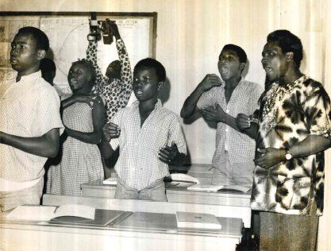
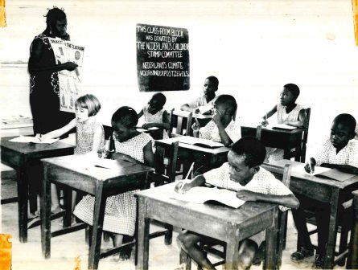

Dining
Structured, nutritious communal meals that build etiquette, fellowship, and social confidence among boarders and pupils.
Holistic academic pathways, communication development, boarding care, and practical vocational training tailored for hearing-impaired learners.
Early intervention is vital for hearing-impaired children. Our Pre-Primary stage welcomes young learners into a warm, structured, and encouraging classroom environment where communication begins early and confidence grows naturally.
Teachers introduce foundational sign language alongside visual teaching aids, rhythm and speech stimulation, and early socialization so every child is prepared for formal primary schooling.


Ibadan School for the Deaf operates a dedicated deaf-only primary school built on over sixty years of specialized teaching experience. Instruction emphasizes strong reading comprehension, writing, mathematics, general knowledge, and character formation.
As attested by alumni who entered the school after facing barriers in regular schools, our structured primary instruction helps pupils preserve existing speech abilities where applicable while mastering sign language and written academic skills.
Our secondary pathway supports deaf students in advancing their academic studies through integrated education structures linked with Ijokodo High School (Junior and Senior Secondary sections), where hearing-impaired students learn alongside hearing peers with specialist support.
Graduates of Ibadan School for the Deaf have progressed to higher institutions across Nigeria — including the Federal College of Education (Special), Oyo, and the University of Ilorin (UNILORIN) — and serve today as lecturers, teachers, engineers, administrators, and civil servants.


True to our founders’ vision that no deaf citizen should ever have to rely on begging, Ibadan School for the Deaf pairs academic schooling with practical vocational and computer-training exposure — supported by residential boarding facilities for students from across Oyo State and beyond.
Historical campus facilities include four computer-training classrooms donated by Rotary International District 9130, supervised vocational training, a campus fish pond, an Audiology Clinic, a multi-purpose hall, and boys’ and girls’ dormitories. Specific active trade workshops available each term can be confirmed directly with the school office.
Directly aligned with our school vision: educating every student through dining, sports, dormitory life, and curricular activities.
Structured, nutritious communal meals that build etiquette, fellowship, and social confidence among boarders and pupils.
Athletics, stadium march-pasts, table tennis, and active games that promote teamwork, physical fitness, and school pride.
A supportive, supervised residential home away from home encouraging personal responsibility, hygiene, and lifelong friendships.
Cultural dance, clubs, assemblies, and creative expression that nurture emotional intelligence and community belonging.